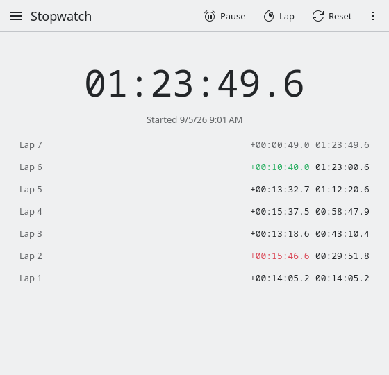

Persistent Stopwatch
A stopwatch for Linux that never loses time.
Close it, suspend, reboot, come back days later: the time is still right. It stores the moment you pressed start instead of counting ticks, so there is nothing running that can be stopped. Made for KDE Plasma, and fully usable from a terminal.
Install
curl -fsSL https://aaghashm.github.io/persistent-stopwatch/install.sh | sh Fedora 44+, Debian 13, Ubuntu 25.04+ and Arch. It picks the right package and hands it to your package manager (read install.sh). Other ways to install.
Version 1.0.0, released October 14, 2026 · Release notes

What it does
-
Keeps time through anything
Closing the window, crashes, suspend and reboots do not stop the clock.
-
Laps
The current lap ticks along on top, finished laps below with splits and totals. Copy them all as a table.
-
Undo a reset
Reset by accident? Ctrl+Z brings back the time and the laps.
-
Command line
Start, pause, lap, reset and read the time without opening a window, even over SSH.
-
Launcher menu
Start or pause, lap and reset from the launcher's right-click menu.
-
Native on Plasma
Built with Kirigami. Follows your theme, fonts and icons.
Command line
The window is optional. Commands change the saved state, print what you ask for and exit. If the window is open, it follows along.
Time a build
persistent-stopwatch --reset --start
make
persistent-stopwatch --pause --status
Paused 00:04:12.7 (started 2026-09-05T10:31:08)Laps
One per line, tab separated: number, the lap's own time, total.
persistent-stopwatch --laps
1 00:01:02.4 00:01:02.4
2 00:00:58.9 00:02:01.3Elapsed minutes for a status bar
persistent-stopwatch --json | jq '.elapsedMs / 60000 | floor'Options
| Option | Does |
|---|---|
--start | start, or resume if paused |
--pause | pause |
--toggle | pause if running, start otherwise |
--lap | record a lap (while running) |
--reset | back to zero, laps cleared |
--status | print state, time and start time |
--laps | print the laps |
--json | state, time, start and laps as JSON |
Options can be combined; --reset --start always restarts from zero.
Bind persistent-stopwatch --toggle to a global shortcut
(System Settings, Keyboard, Shortcuts) to time things without touching the window.
man persistent-stopwatch has the rest.
In the window
- Space
- start or pause
- L
- lap
- R
- reset
- Ctrl+Z
- undo the reset
Other ways to install
The one-line installer only picks the package for your system. To do the same by hand, use your package manager directly. Packages for x86_64 and aarch64 are attached to every release.
Fedora 44 or newer. dnf installs straight from the release URL and pulls in the KDE libraries:
sudo dnf install https://github.com/aaghashm/persistent-stopwatch/releases/latest/download/persistent-stopwatch.$(uname -m).rpmDebian 13, Ubuntu 25.04 or newer (they ship KDE Frameworks 6):
arch=$(dpkg --print-architecture)
curl -fLO https://github.com/aaghashm/persistent-stopwatch/releases/latest/download/persistent-stopwatch_$arch.deb
sudo apt install ./persistent-stopwatch_$arch.debBuild the package with the PKGBUILD in the repository. Needs git and base-devel. Run as your normal user, not root:
git clone https://github.com/aaghashm/persistent-stopwatch
cd persistent-stopwatch/packaging/arch
makepkg -siNeeds CMake, Ninja, a C++ compiler, extra-cmake-modules, Qt 6.6+ and KDE Frameworks 6 (Kirigami, Config, CoreAddons, Crash, DBusAddons, I18n, WindowSystem).
git clone https://github.com/aaghashm/persistent-stopwatch
cd persistent-stopwatch
cmake -B build -G Ninja
cmake --build build
sudo cmake --install buildHow it works
Most stopwatches add up timer ticks while they run, so the count dies with the process. This one saves three facts on every button press: the state, the time accumulated before the last start, and the wall-clock moment of that start. Elapsed time is always computed from those. A wall clock that jumps backward (NTP, a dead RTC battery) is clamped so the time can never shrink.
The state lives in ~/.local/state/persistentstopwatchstaterc, a small text file.
The window watches it, which is how it follows commands typed in a terminal.
Delete it to start from scratch.
Questions
Does it keep counting while the computer is off?
Yes.
Does it need Plasma?
No. It needs the KDE Frameworks libraries, which the packages pull in, and runs on GNOME and other desktops too. Without the KDE desktop style installed it uses Qt's default look.